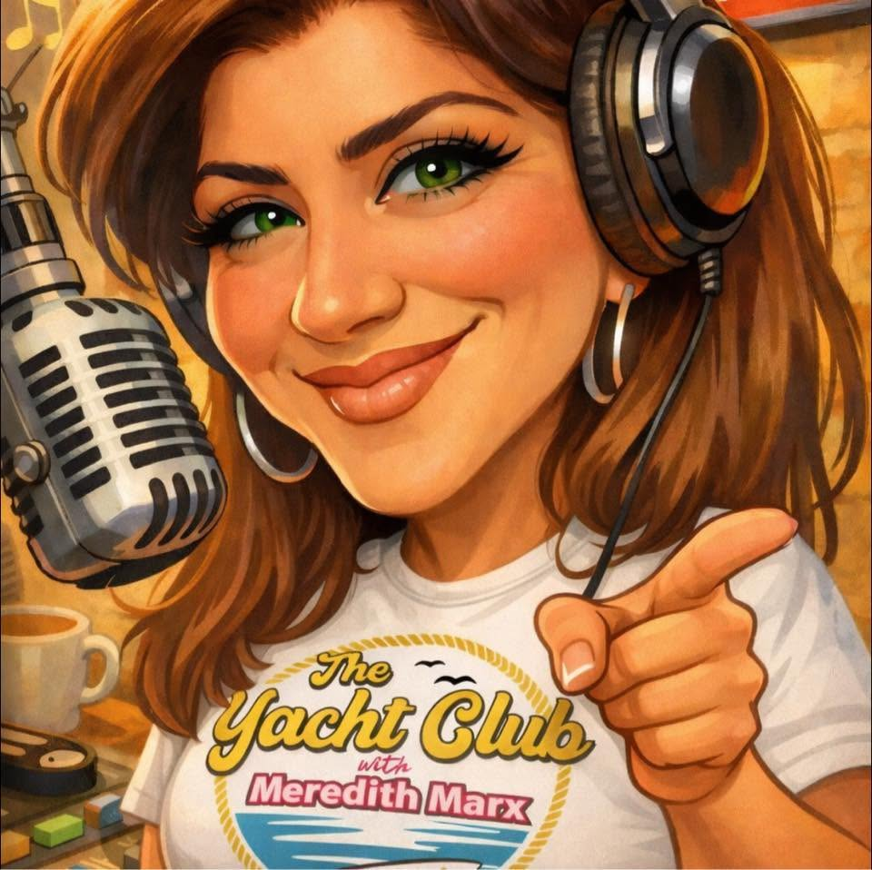
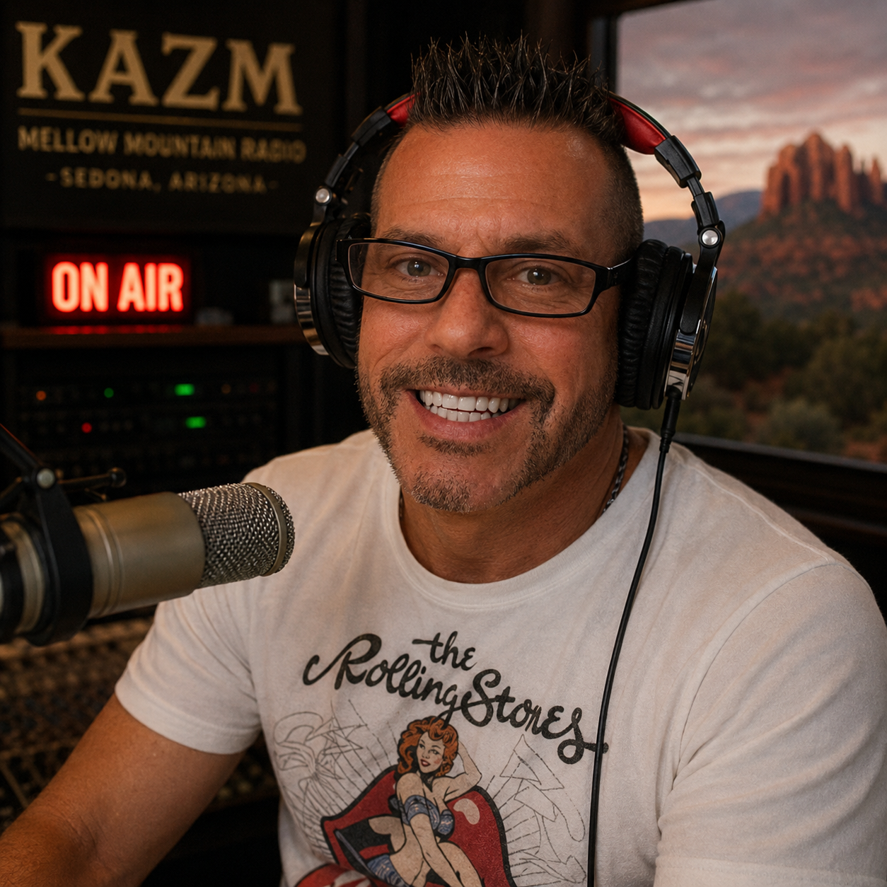
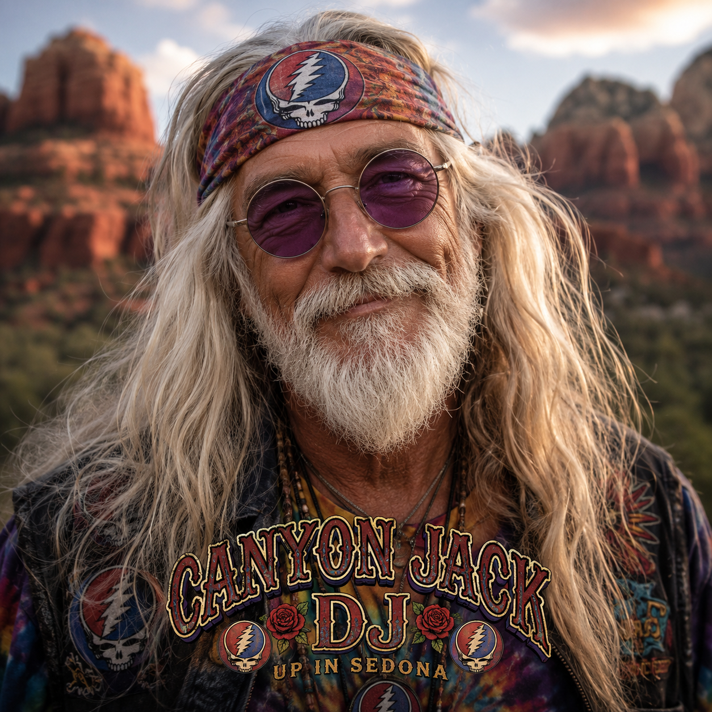
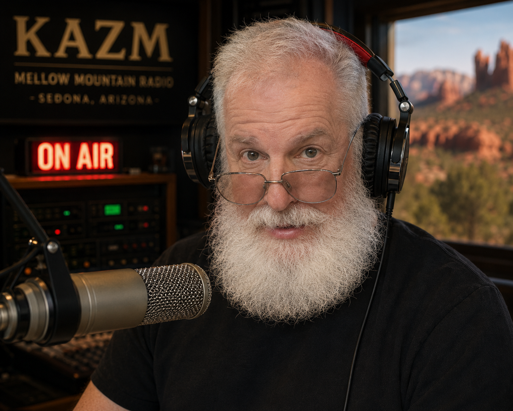
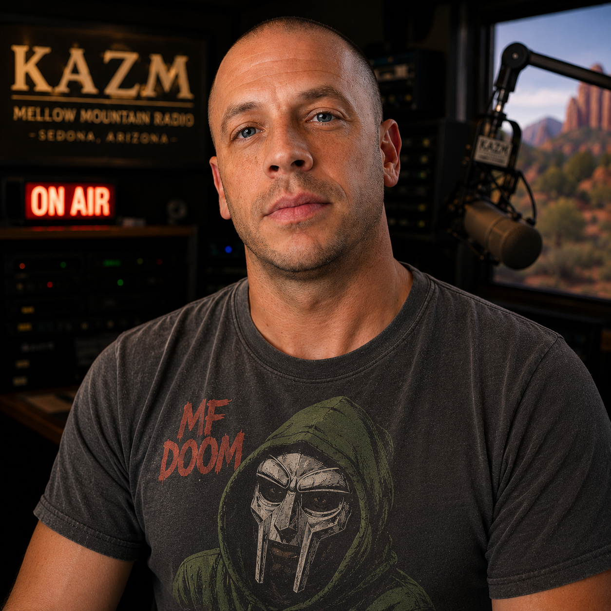
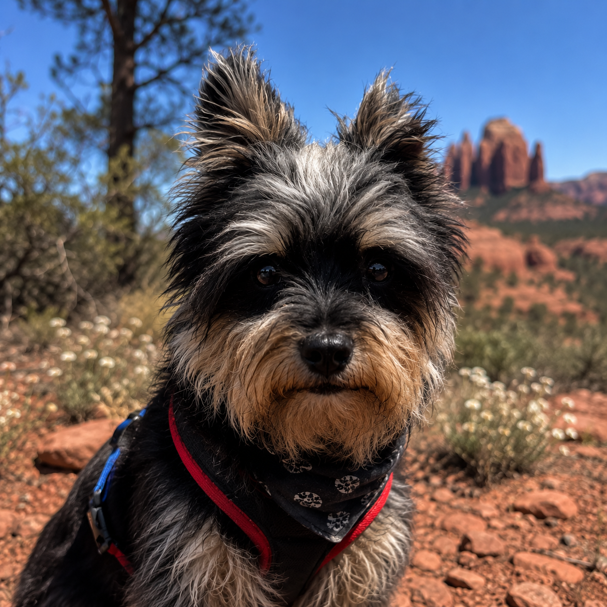

On AirMeredith Marx
DJ
Before she rose to the rank of Captain, young Cadet Marx was born into the storm that is rock and roll.
- Favorite record
- Toto — Toto IV
- Sedona signal
- Plays “Africa” more than the algorithm allows
Since 1974 · Broadcasting from Sedona, Arizona
Behind every song, forecast, game, alert, and overnight mystery is a small team keeping Sedona company.

On AirDJ
Before she rose to the rank of Captain, young Cadet Marx was born into the storm that is rock and roll.

On AirDJ
Mike’s been behind a KAZM mic since before the station had a website. Ask him about a deep cut and he’ll play it before you finish the sentence.
Host, The Quiet Storm
Two hours of timeless R&B and soul, daily 4–6am, closing out the night before the mountain wakes up.

On AirDJ
Canyon Jack has been parked at the same overlook since 1987, give or take a decade. He plays what feels right, and out here, that’s usually the Dead.
DJ
Kaley brings the sound bowls, the sunrise yoga, and the reminder that the red rocks were here before all of us and will be here after. Good vibes, actual vibes.
Meteorologist
Christopher reads the sky over Sedona like most people read a room — front systems, monsoon build-up, the exact hour a storm rolls off the Mogollon Rim. No green-screen theatrics, just the actual forecast.
Production Director · Traffic Manager
Ryan runs the log like a conductor runs an orchestra — traffic, spots, and timing, all landing exactly when they’re supposed to. If the station sounds seamless, that’s Ryan, not luck.

Behind the ScenesEngineering Consultant
Frank has kept KAZM’s tower standing through lightning, monsoons, and one memorably bad windstorm. If the signal’s clean, Frank’s the reason — usually from somewhere up a ladder.

Behind the ScenesGeneral Manager · Program Director
Chuck bought KAZM because he believes small-town radio still matters. When he’s not rebuilding transmitters, writing software, or chasing the next impossible idea, he’s making sure Sedona still has a voice.

Station MascotStation Dog · Listener Relations
Loki handles morale, security, snack inspection, and making sure nobody takes radio too seriously.
Requests, sponsorships, corrections, or just to say hello — the team actually reads it.
Reach the Team